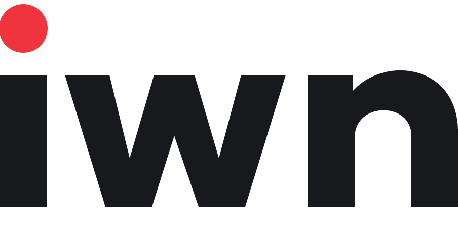
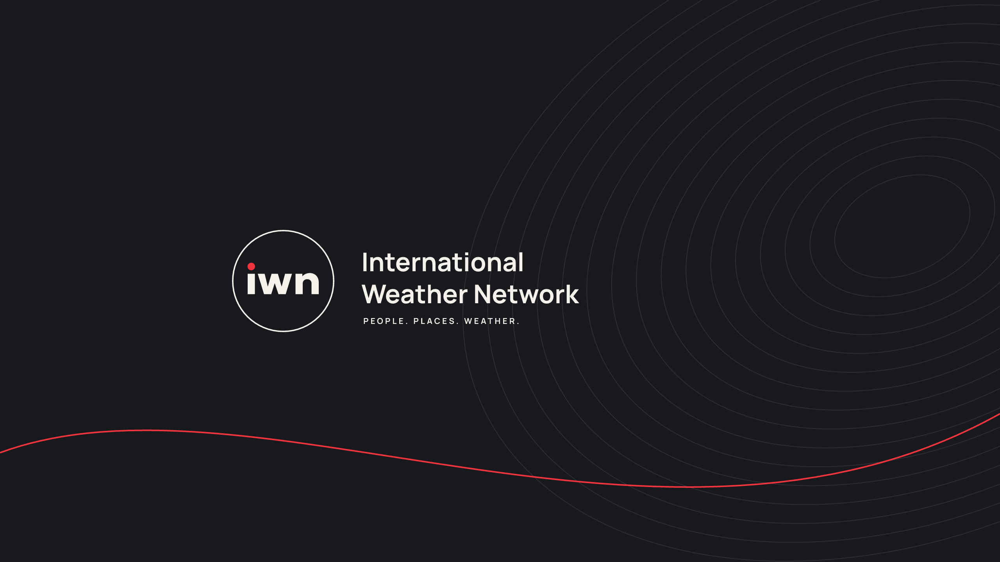

The recommended direction uses a lowercase, custom-drawn iwn mark with a red dot, circular badges, quiet contour lines and slim thumbnail headline strips. Shared broadcast functions become an original IWN visual system.
Charcoal
#17191D
Panels and grounding
Warm white
#F5F2EB
Type and contrast
Signal red
#EF343D
Signature dot and accents
Typography: Anton for short thumbnail headlines; Manrope for channel names, locations, dates and broadcast copy. The logo is vector artwork and requires no font. Keep red sparse, retain a clear location and date, and use 3–5 words for thumbnail headlines.
01 / The mark

White transparent PNG
Dark vector SVG
Keep one dot-width of clear space around the wordmark. Use the full badge at 48 px and above; avoid adding small channel-name text inside it.
02 / Channel banner

2560 × 1440 PNGEditable SVG
Name and logo sit within the central 1546 × 423 design area. Confirm the crop in YouTube’s upload preview before publishing.
03 / Bold weather thumbnails
Larger type and branding, high-contrast emergency ribbon, and the approved flood visual. Four color proposals.
Download all four
AI-generated scene; LIVE is a design mockup. Event claims require verification before publication.
04 / In-video packaging
Silent, 1920 × 1080 at 30 fps. Transparent ProRes 4444 MOV files go above footage in your editor. MP4 files below are review copies with a neutral background. The editable Tesseract projects contain native text, vector shapes and animation.
Replace demonstration headlines and the location/date placeholders before publishing. Extend the ticker duration and copy in its source for longer videos; this sample is not a seamless loop. Use either the headline panel or ticker in the same bottom area. Show the subscribe panel at a different time to avoid collisions. Placement still needs checking against your actual footage and subtitles.
05 / Exploration
Signal is the recommended route. Orbit adds a fine arc; Front introduces a slanted wordmark. These generated concept studies explore the direction; the vector assets above are the consistent production masters.
Three-logo concept boardAtmospheric banner study
Created with the built-in image generator for concept imagery, native SVG for static production artwork, and Tesseract for editable motion. Fonts: Google Fonts, SIL Open Font License; license files included. Reference supplied by the user: Global Weather Network. The New Mexico design demo reuses GWN imagery as requested. Core IWN logo and broadcast assets are original.